教条条如何一起使用Git和Hexo
迁移环境
基础组件的安装和配置
安装Git
安装Git的目的是为了保证代码能随时与Github同步，是多人协同必须安装的软件。点击这里下载Git安装包。如下图：
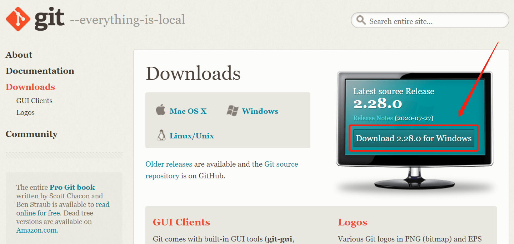
下载之后双击打开，然后每次都对默认选项不做任何修改，点击下一步即可，直到安装完成。
恭喜Git安装成功！🎈🎈🎈
配置Git
按下win键，输入cmd，然后打开cmd。
这里，我们选择使用ssh密钥的配置方式，这种方式的好处是，不需要每次push的时候都要去输入用户名和密码哦。
首先我们先配置Github的用户名和邮箱：
1 | git config --global user.name "这里填你的用户名一定要修改成自己的" |
样例如下
1 | git config --global user.name "tiaotiao" |
配置好用户名和邮箱之后，我们通过配置ssh密实来帮助github辨别这个电脑用户的身份。
接下来我们先通过命令生成ssh的密匙。顺序执行以下三条命令，第一条命令会在用户根目录的.ssh目录下生成密匙，执行第一条命令时全部默认选项回车即可。
1 | ssh-keygen -t rsa -C "你的邮箱" |
执行完第三条命令之后，你的密钥会被打印到命令行，显示如下：
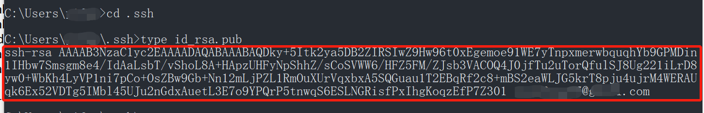
接下来把红框中的字母串复制到剪切板上备用。注意这个完整的字符串以**“ssh-rsa"开头，以"你的邮箱”**结尾。
接下来我们打开Github，使用你的用户名和密码登录，打开设置，如下：
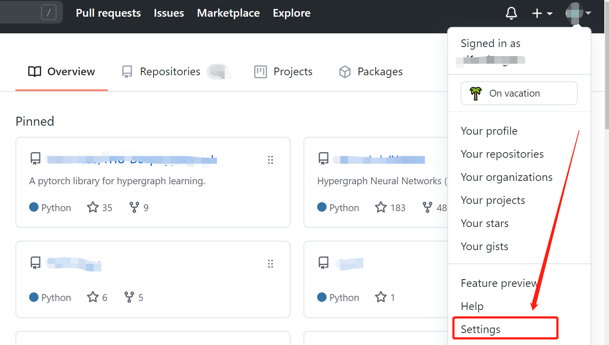
从最左侧找到SSH and GPG keys并点击点击，如下：
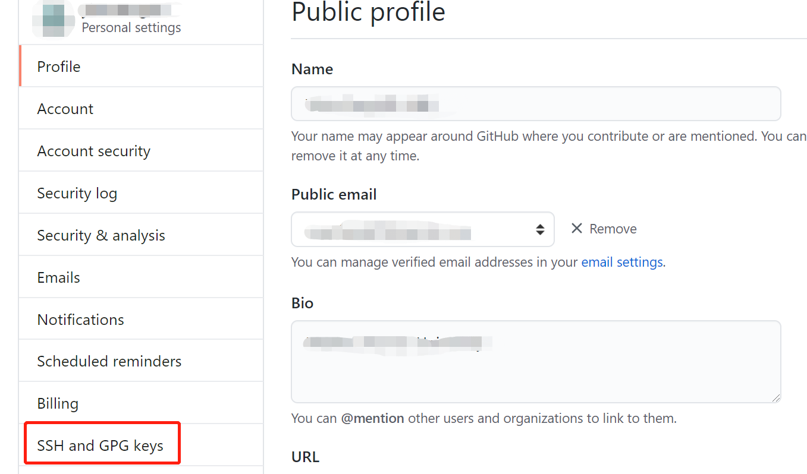
点击右上角的New SSH key，如下：
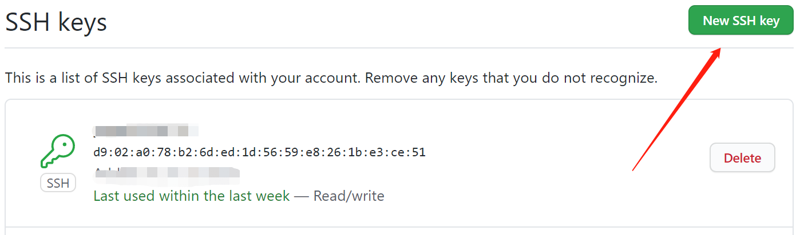
在如下的框中输入自拟的Title，Key要填入前面存在粘贴板上的字符串，如下：
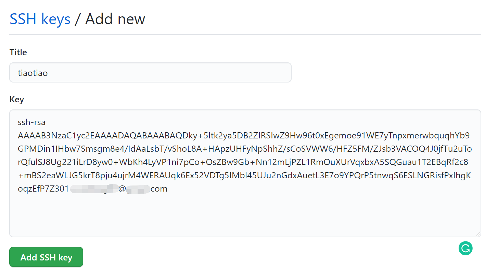
点击Add SSH key，在弹出的界面输入github的密码之后，即添加成功，成功后的界面如下：
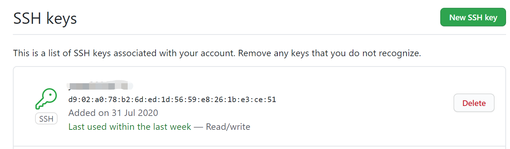
恭喜！Github配置成功！🎈🎈🎈
接下来，我们要从github上把项目clone到本地上来，假设我们的得到的git网址为：
git@github.com:xxx/xxx.git
于是接下来我们选择一个合适的目录来存放这个项目的源码，假设你已经把命令行change到合适的目录，我们执行如下命令来clone源码：
1 | git clone git@github.com:xxx/xxx.git |
通过执行dir命令，你会很惊奇的发现，在这个目录下多了一个文件夹叫xxx。
为了进入这个文件夹，执行cd xxx。
接下来我们要安装Node.js。
安装Node.js
安装Node.js的目的是为了，给网站提供解释前端的web框架。
首先我们打开Node.js的官网，下载左边的12.18.3的版本。
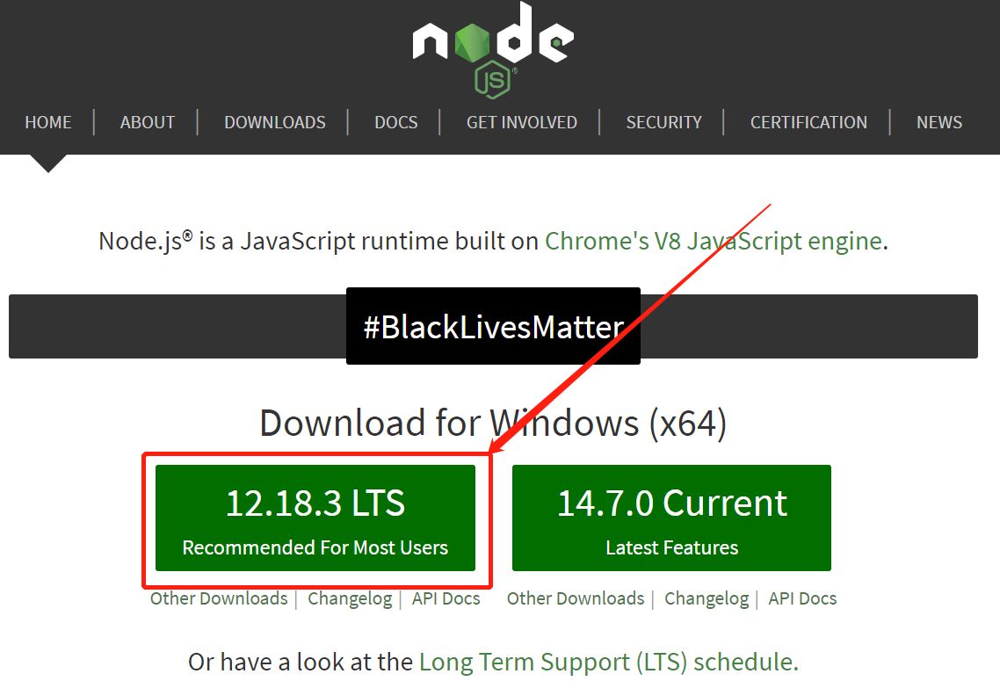
然后双击下载好的安装包，进行安装。每个界面都使用默认的选项，不做任何更改，直接点击下一步，弹出请求权限的时候点同意，直到安装完成。
恭喜Node.js安装成功！🎈🎈🎈
配置Node.js
配置Node.js的目的是为了加速package的安装，由于它默认的服务器在国外访问起来速度很慢，这里我们选择taobao的镜像进行替换，并安装cnpm来替换原本的npm，可以简单的将cnpm理解为china's npm。执行如下命令：
1 | npm config set registry https://registry.npm.taobao.org |
注意下面要通过管理员身份打开一个新的cmd，才可以执行下面一条的命令，我们与先前打开cmd一样，我们首先按下win键，然后输入cmd，然后点击以管理员身份运行，如下：
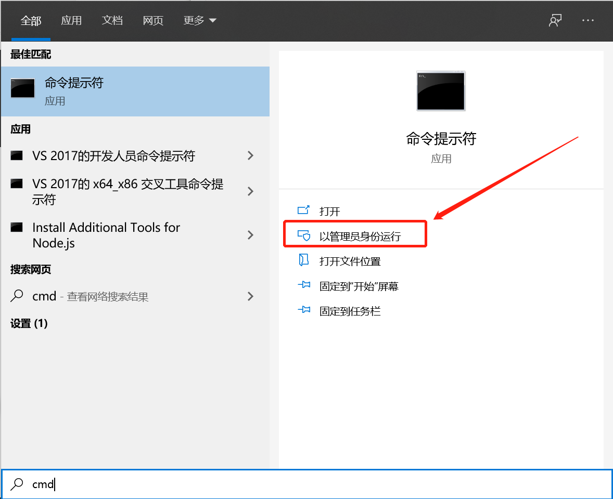
由于Node.js需要Python2等依赖，因此我们通过下面的命令一次性将windows上所有需要的依赖补全，如下命令：
1 | cnpm install --global --production windows-build-tools |
执行完之后，关闭刚刚用管理员权限打开的cmd。回到之前打开的第一个cmd。
恭喜Node.js配置成功！🎈🎈🎈
安装Hexo
这里Hexo就是我们今天的主角了，整个博客都是基于Hexo框架。
在前面已经装好Git和Node.js之后，下一步我们只需要执行一条命令就能安装好Hexo啦。
1 | cnpm install -g hexo-cli |
恭喜Hexo安装成功！🎈🎈🎈
配置Hexo
下面要针对刚刚clone下来的包，配置好Hexo的环境。
首先打开clone下来的xxx代码的根目录。
注意一定要把命令行的当前路径change到博客代码的根目录！！！
分别执行如下命令：
1 | cnpm install |
等待执行结束。
恭喜Hexo配置成功！🎈🎈🎈
如何写新的文章？
从Github同步代码（pull）
先同步最新的代码到本地，在代码根目录执行如下代码：
1 | git pull |
新建文章
新建文章很简单，就一条命令，如下：
1 | hexo new "新博客的名字" |
例如，新建一篇名叫"我的傻条条"的文章：
1 | hexo new "我的傻条条" |
然后你就可以发现在source\_posts\下面出现了新的文章和文件夹：
- 文章
我的傻条条.md - 文件夹
我的傻条条
其中我的傻条条.md是文章的markdown源码，可以直接使用Typora打开编辑。我的傻条条文件夹是用来存放此文章所需要的所有图片。
写文章注意事项
文章以markdown的形式存放在我的傻条条.md中，基本语法参考markdown的语法。
但是这里有两点需要注意的：文章头部信息的编辑和如何插入图片。
文章头部的编辑
首先我们看下自动生成的文件头部的样子，如下图：
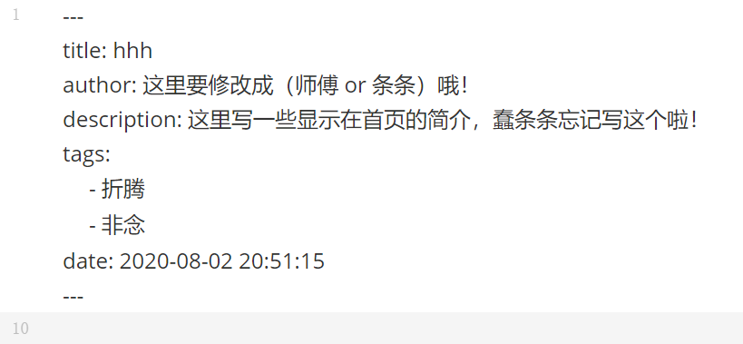
下面的这些项目都需要自己修改 。
- title：即为到时候显示在文章上面的标题。
- author：师傅/条条。
- description：显示在首页的描述，自己修改哦。
- tags：自己设置哦：折腾、非念、树洞、有的没的、等等。
- date：不用修改，会自动设置，显示在首页，可以手动修改纠正。
如何插入图片
将图片保存在与文件同名的文件夹中，前面自动创建的有。然后在文章中通过下面的方式引用：
1 |  |
方括号内为文件描述，括号中为文件路径，注意这里直接放图片名字就好，不要加文件夹名字！！！可能会导致typora中无法预览，但是编译到网站上是没有问题哒。
举个例子，若文件夹中的图片有下面这些：
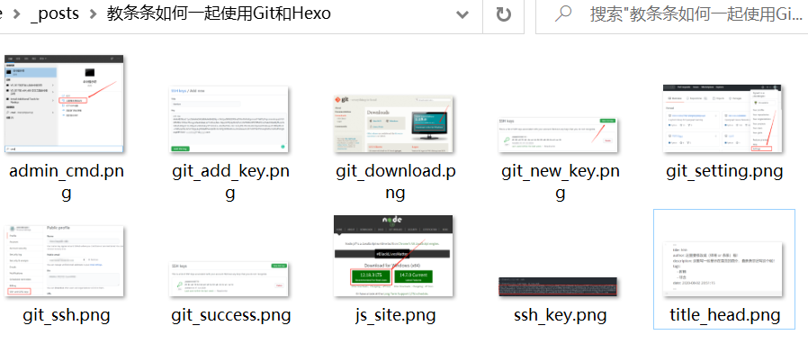
我们想在文章中引用叫insert_image.png这一个图片，那么我们需要在文章中的对应位置，插入如下代码：
1 |  |
重新编译生成博客
分别执行如下两条命令：
1 | hexo clean |
本地预览
执行如下命令：
1 | hexo s |
然后终端中会打印出一个网址，如下：
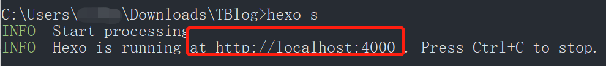
然后在浏览器输入这个网址，就能在浏览器预览博客啦。
上传到服务器
执行一条命令，如下：
1 | hexo d |
中途可能需要输入用户名和密码，输入好自动部署到远程服务器上啦，稍等几分钟zdfyf.fun里面的内容就更新啦，就能看到新的的博客啦。
同步到Github（push）
分别执行三条命令，如下：
1 | git add . |
完结撒花
恭喜你！！！
🌹🌹🌹🌹🌹🌹🌹🌹